ខេត្តនៅក្នុងប្រទេសកម្ពុជា
សូមស្វាគមន៏មកកាន់ខេត្តសៀមរាប
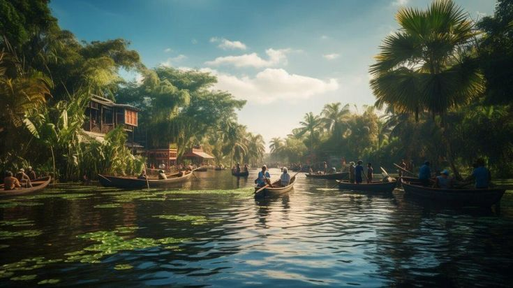
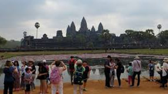
ខេត្តសៀមរាបមានប្រវត្តិយូរឆ្នាំជាប់ទាក់ទងជាមួយនឹងអាណាចក្រខ្មែរ បុរាណ។ តំបន់នេះធ្លាប់ជាមជ្ឈមណ្ឌលនៃអាណាចក្រខ្មែរ ដែលមានទីរួមនៅទីក្រុងអង្គរ។ អាណាចក្រខ្មែររីកចម្រើនយ៉ាងខ្លាំងចាប់ពីសតវត្សទី ៩ ដល់សតវត្សទី ១៥ ក្រោមរាជ្យព្រះបាទជ័យវរ្ម័នទី២ និងស្ដេចរាជបុត្រជាច្រើនទៀត។ ក្នុងអំឡុងពេលនោះបានសង់ប្រាសាទជាច្រើនដូចជា អង្គរវត្ត, អង្គរធំ, ប្រាសាទបាយ័ន, តាព្រហ្ម, និងប្រាសាទជាច្រើនទៀត ដែលបង្ហាញពីសិល្បៈ និងស្ថាបត្យកម្មខ្មែរយ៉ាងអស្ចារ្យ។
ពាក្យ “សៀមរាប” មានន័យថា “យុទ្ធជ័យលើសៀម” ដែលជាការចងចាំពីសង្គ្រាមរវាងអាណាចក្រខ្មែរនិងសៀម (ថៃបច្ចុប្បន្ន) នៅសម័យបុរាណ។ តាមតម្លាភាពប្រវត្តិសាស្ត្រ ខេត្តសៀមរាបធ្លាប់ជាតំបន់មានសារៈសំខាន់ក្នុងការពារព្រំដែនខាងជើងនៃប្រទេសកម្ពុជា។
ក្រោយការរលាយនៃអាណាចក្រខ្មែរ នៅសតវត្សទី ១៥ ទីក្រុងអង្គរត្រូវបានបោះបង់ចោល ហើយតំបន់សៀមរាបក៏ស្ថិតក្រោមឥទ្ធិពលសៀមរយៈពេលជាច្រើនឆ្នាំ។ ទើបតែពេលក្រោយ នៅឆ្នាំ ១៩០៧ ប្រទេសសៀម (ថៃ) បានប្រគល់តំបន់សៀមរាប និងបាត់ដំបងត្រឡប់មកឱ្យកម្ពុជា តាមកិច្ចព្រមព្រៀងជាមួយប្រទេសបារាំង ដែលជាអាណានិគមកម្ពុជា។
ក្រោយមក ខេត្តសៀមរាបបានក្លាយជាតំបន់ទេសចរណ៍សំខាន់បំផុតក្នុងប្រទេសកម្ពុជា ដោយសារតែមានប្រាសាទអង្គរវត្ត និងបូរីអង្គរ ដែលត្រូវបានអង្គការយូនេស្កូ (UNESCO) បញ្ចូលជាបេតិកភណ្ឌពិភពលោកនៅឆ្នាំ ១៩៩២។
សព្វថ្ងៃ ខេត្តសៀមរាបជាគោលដៅទេសចរណ៍សំខាន់បំផុតមួយនៃអាស៊ីអាគ្នេយ៍ មានទាំងអារម្មណ៍ប្រវត្តិសាស្ត្រ វប្បធម៌ និងសិល្បៈបុរាណដែលបន្តរស់នៅរហូតមកដល់សព្វថ្ងៃ។
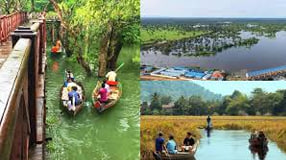
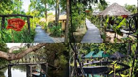
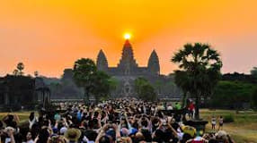
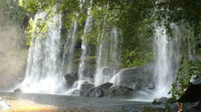
សៀមរាប គឺជាទឹកដីសម្បូរទៅដោយសម្បត្តិវប្បធម៌ សំណង់ប្រាសាទប្រវត្តិសាស្ត្រ និងតំបន់ទេសចរណ៍ធម្មជាតិជាច្រើន ដែលល្បីល្បាញទូទាំងប្រទេសកម្ពុជា និង លើពិភពលោក។ ដូច្នេះហើយ ទីក្រុងសៀមរាប ក្លាយជាគោលដៅទេសចរណ៍ “ត្រូវតែទស្សនា” សម្រាប់ភ្ញៀវជាតិ និងអន្តរជាតិទាំងអស់ដែលមកប្រទេសកម្ពុជា។ ប្រាង្គប្រាសាទអង្គរវត្ត ដ៏ស្គឹមស្គៃរបស់បុព្វបុរស់ខ្មែរ ដែលល្បីល្បាញលើសកលលោក គឺជាទិសដៅចម្បងជាងគេសម្រាប់ភ្ញៀវទេសចរទាំងឡាយ រួមទាំងភ្ញៀវទេចរជាមួយគ្រួសារដែលមានកូនតូចៗផងដែរ។ លើសពីនេះទៅទៀត សម្រាប់អ្នកធ្វើដំណើរកម្សាន្តជាមួយគ្រួសារ សៀមរាបក៏មានទីកន្លែងកម្សាន្តសប្បាយៗជាច្រើនដែលអ្នកអាចនាំកូនរបស់អ្នកទៅកម្សាន្តផងដែរ។ ខាងក្រោមនេះ គឺកន្លែងកម្សាន្តដ៏ពេញនិយមជាងគេនៅខេត្តសៀមរាប៖
១. កញ្ចុះតាមមាត់ទឹក បារាយទឹកថ្លា :
បារាយទឹកថ្លា ឬបារាយខាងលិច គឺជាអាងស្តុកទឹកដ៏ធំល្វឹងល្វើយ (ប្រភពទឹកមកពីភ្នំគូលេន) ដែលបានកសាងឡើងតាំងពីសម័យបុរាណ ក្នុងសតវត្សទី១១។ វាក៏ជាបុរេដ្ឋាន ផ្នែកប្រវត្តិសាស្ត្រដ៏សំខាន់ ដែលមានទំនាក់ទំនងសំណង់ប្រាសាទ និងជីវភាពរស់នៅសម័យបុរាណ។ លើបរិវេណទួលបារាយ មានសំណង់ប្រាសាទចាស់ជាច្រើន ប៉ុន្តែប្រាសាទដែលនៅកោះចំកណ្តាលបារាយ ដែលមានឈ្មោះថា មេបុណ្យខាងលិច មានភាពទាក់ទាញជាងគេ។ បច្ចុប្បន្ន បារាយទឹកថ្លា ក្លាយទៅជារមណីយដ្ឋានពេញនិយមចំពោះភ្ញៀវទេសចរទាំងឡាយសម្រាប់សម្រាកលំហែរកាយ និងងូតទឹកកម្សាន្ត។
២. សារមន្ទីរជាតិអង្គរ ខេត្តសៀមរាប :
សារមន្ទីរជាតិអង្គរ គឺជាកន្លែងដ៏ពិសេសមួយដែលបានប្រមូលផ្តុំទៅដោយរូបចម្លាក់ព្រះពុទ្ធសាសនា និងហិណ្ឌូសាសនាសំខាន់ៗរាប់ពាន់ ដែលយកមកពីប្រាសាទផ្សេងៗគ្នានៃតំបន់ប្រាសាទអង្គរ ដ៏អច្ឆរិយដើម្បីដាក់បង្ហាញជូនភ្ញៀវទេសចរមកពីគ្រប់តំបន់នៅលើពិភពលោកមកទស្សនា។ ចម្លាក់ និងវត្ថុបុរាណដ៏មានតម្លៃទាំងអស់នេះ ត្រូវបានរកឃើញ និងរក្សាទុកយ៉ាងមានសុវត្ថិភាពដោយអាជ្ញាធរការពារប្រាសាទនៅក្នុងសារមន្ទីរជាតិអង្គរ ចាប់តាំងពីមានការលួចយករូបចម្លាក់ និងវត្ថុបុរាណជាច្រើនទៀតទៅលក់ឱ្យសារមន្ទីរឯកជន និងហាងលក់ដេញថ្លៃ នៅក្នុងបណ្តាប្រទេសមួយចំនួននៅលើពិភពលោក។ ដូច្នេះ ប្រសិនបើអ្នកចង់ឱ្យកូនរបស់អ្នកបានស្គាល់អំពីវប្បធម៌-អរិយធម៌ដ៏ខ្ពង់ខ្ពស់របស់ជនជាតិខ្មែរកាន់តែទូលំទូលាយ ចូរកុំខកខានចូលទស្សនាសារមន្ទីរជាតិអង្គរ។
Sam Sakda, [2/20/2024 5:26 PM]
៣. រមណីយដ្ឋានធម្មជាតិ បឹងត្រាវកុដិ :
ត្រាវកុដិ គឺជាឈ្មោះបឹងធម្មជាតិមួយដែលឋិតនៅក្នុងភូមិក្រពើ ឃុំបល្ល័ង្ក ស្រុកប្រាសាទបាគង ចម្ងាយប្រមាណ ២៨គីឡូម៉ែត្រ ភាគឦសានពីទីរួមខេត្តសៀមរាប។ ទីនោះមានបឹងធម្មជាតិមួយដែលមានផ្ទៃទឹកលាតសន្ធឹងនៅរដូវប្រាំងទំហំប្រហែល៣០ហិកតា ព្រមទាំងមានព្រៃធម្មជាតិដ៏ស្រស់ត្រកាលកំពុងទាក់ទាញអ្នកទេសចរយ៉ាង ខ្លាំង។ ប្រសិនបើលោកអ្នកចង់ទៅកម្សាន្តនៅតំបន់នោះ គឺត្រូវធ្វើដំណើរតាមផ្លូវជាតិលេខ៦ ហើយពេលទៅដល់ម្ដុំអង្គ្រង គឺត្រូវបត់ចូលតាមផ្លូវជាតិលេខ៦៧ សំដៅឆ្ពោះទៅមណ្ឌលអភិវឌ្ឍន៍យោធិនពិការ ហ៊ុន សែន គូលែន ឬក៏សាលានគរបាលយោធភូមិភាគទី៤ នោះលោកអ្នកនឹងទៅដល់កន្លែងកម្សាន្តនោះមិខាន។
៤. រមណីយដ្ឋានភ្នំគូលែន :
រមណីយដ្ឋានភ្នំគូលែន ស្ថិតនៅចម្ងាយជាប្រមាណ៦០គីឡូម៉ែត្រ ពីទីរួមខេត្តសៀមរាប។ ភ្នំគូលេន មានរមណីដ្ឋានជាច្រើនកន្លែងដូចជា តំបន់ទឹកធា្លក់ ព្រះអង្គធំ វាលស្តេចគំលង់ វាលព្រះសព្វ ព្រះក្រាល និងមានប្រាសាទតូចៗ ធ្វើអំពីឥដ្ឋជាច្រើនទៀតដែលជាស្នាព្រះហស្ថ ព្រះបាទជ័យវរ្មន័ទី២ បានកសាងឡើង។ តំបន់ទឹកធ្លាក់ គឺជាប្រភពដើមរបស់ស្ទឹងសៀមរាប ហូរកាត់កណ្តាលទីរួមខេត្តឆ្ពោះទៅកាន់បឹងទន្លេសាប ដែលមានទឹកថ្លាយង់ជាទីពេញនិយមរបស់អ្នកដំណើរកម្សាន្តក្នុងការមុជទឹកជ្រោះធ្លាក់ទៅប៉ះនឹងថ្មបែកផ្កាតែ្រង។


១. នំបញ្ចុកទឹកប្រហុក
នំបញ្ចុកទឹកប្រហុកជារូបមន្តថ្មីដែលបង្កើតឡើងដោយអ្នកស្រុកអង្គរ បានក្លាយជាមុខម្ហូបដ៏ពេញនិយមនៅក្នុងខេត្តសៀមរាប។ ភ្ញៀវទេសចរភាគច្រើនដែលមកលេងសៀមរាបមិនដែលរំលងនៅម្ហូបនេះឡើយ។ សម្រាប់អ្នកដែលមិនទាន់បានញ៉ាំអាចមកសាកល្បងបាននៅមុខអង្គរ។
មុខម្ហូបនេះមានបន្លែស្រស់ដូចជា ត្រកួន ស្ពៃក្តោប សណ្ដែកគួរ និងសណ្តែកហ័រឡាំងតាវ ដែលអាចបន្ថែមជាមួយនឹង ត្រីអាំង វាមានរសជាតិប្លែកខុសពីនំបញ្ចុកខ្មែរធម្មតា(សម្លខ្មែរ)។ បន្ទាប់ពីបានភ្លក់ហើយ លោកអ្នកពិតជាពិបាកនឹងបំភ្លេចរសជាតិដ៏ឆ្ងាញ់មួយនេះ។
២. នំអាកោត្នោត ភូមិព្រះដាក់
ពេលមកដល់ភូមិព្រះដាក់ អ្នកត្រូវតែភ្លក់នំអាកោត្នោតរបស់អ្នកភូមិព្រះដាក់ ដែលមានដាក់ខ្ទិះដូងលើនំពណ៌លឿង នឹងរុំដោយស្លឹកចេក ជាមួយក្លិននំដ៏ឈ្ងុយ។ នៅតាមដងផ្លូវក្នុងភូមិព្រះដាក់ មានផ្ទះជាច្រើនលក់នំអាកោត្នោតនេះ ដែលល្បីថាមានរសជាតិឈ្ងុយឆ្ងាញ់ និងមានអនាម័យល្អ ហើយមានការគាំទ្រច្រើនពីអ្នកដែលបានភ្លក់រសជាតិផ្ទាល់នៅតំបន់នោះ ជាពិសេសភ្ញៀវទេសចរណ៍។
៣.មាន់ដុតបាគង
បើយើងនិយាយអំពីស្រុកបាគង អ្នកប្រហែលជានឹកដល់រសជាតិមាន់ដុត អ្នកដំណើរដែលបានឆ្លងកាត់នឹងបានហិតនូវក្លិនឈ្ងុយរបស់មាន់ដុតថ្មីៗ ដែលក្លិនោះបានរសាត់តាមផ្លូវជាតិលេខ៦។ អ្នកដែលធ្វើដំណើរឆ្លងកាត់ស្រុកបាគងអាចឈប់ ហើយសាកម្ហូបបែបជនបទនេះបាន។
. សាច់គោអាំង វត្តដំណាក់
សាច់គោអាំងវត្តដំណាក់ ត្រូវបានគេស្គាល់នឹងចាប់អារម្មណ៍ភ្លាមៗពេលដែលបានដើរកាត់ ដោយសារមានផ្សែងហុយខ្លាំង ហើយអ្នកប្រហែលជាគិតថាមានភ្លើងឆេះ ប៉ុន្តែការពិតវាជាសាច់គោលាយខ្លាញ់ដែលកំពុងអាំង អ្នកនឹងឃើញគេកំពុងតែប្រែសាច់គោចង្កាក់នៅលើរងើកភ្លើងដែលជាមួយធ្វីដៃយ៉ាងប៉ិនប្រសប់។
លើសពីនេះ សាច់គោអាំងវត្តដំណាក់ ៥. ប្រហុកចិញ្រ្ចាំអាំងលើជ្រុញ
ប្រហុកចិញ្រ្ចាំអាំងលើជ្រុញ គឺជាអាហារមួយប្រភេទដែលគេពេញនិយមបំផុតនៅក្នុងខេត្តសៀមរាប។ ប្រហុកចិញ្រ្ជាំត្រូវបានលាយជាំមួយនឹងគ្រឿង និងគ្រឿងផ្សំដូចជា ម្ទេស និងខ្ទឹមស ក្រសាំង ខ្ទឹមស និងមានគ្រឿងជាច្រើនទៀត ដើម្បីបំបាត់ក្លិនប្រហុក បន្ទាប់មកគេយកទៅអាំង និងដាក់លើជ្រុញ ដើម្បីទទួលបាននូវបទពិសោធន៍ និងការតុបតែងថ្មីមួយ។ បើបានទៅលេងខេត្តសៀមរាប សូមកុំឲរំលងជាមួយមុខម្ហូបដ៏ពិសេសនេះ!
មុខម្ហូបនេះគឺជាម្ហូបពេញនិយមប្រចាំខេត្តសៀមរាប ជាទូទៅហាងបាយតូចធំ និងភោជនីយដ្ឋានខ្មែរលំដាប់ណាក៏មានបម្រើម្ហូបមួយប្រភេទនេះផងដែរ៕
បើបានញ៉ាំជាមួយជ្រក់ល្ហុង និងនំបុ័ងក្តៅៗ រឹតតែឆ្ងាញ់។ ចំពោះរសជាតិនៃសាច់គោអាំងវត្តដំណាក់ មិនត្រឹមតែអតិថិជនខ្មែរនោះទេដែលចូលចិត្ត សូម្បីតែភ្ញៀវទេសចរណ៍បរទេសក៏ចូលមកបរិភោគនៅទីនោះជាញឹកញាប់ផងដែរ។
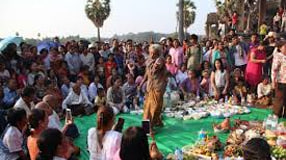
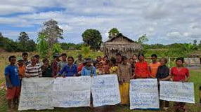
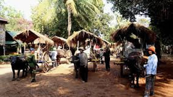
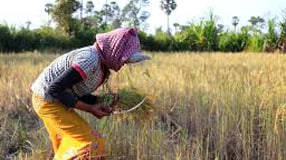
មុខរបរសំខាន់ៗ
វិស័យទេសចរណ៍៖ ដោយសារខេត្តសៀមរាបជាទីតាំងប្រវត្តិសាស្ត្រនៃប្រាសាទអង្គរវត្ត មុខរបរសំខាន់បំផុតគឺពាក់ព័ន្ធនឹងវិស័យទេសចរណ៍។ ប្រជាជនច្រើនប្រកបរបរជា៖
បុគ្គលិកសណ្ឋាគារ ផ្ទះសំណាក់ និងភោជនីយដ្ឋាន។
អ្នកបើកបររ៉ឺម៉កកង់បី (Tuk-Tuk) និងមធ្យោបាយដឹកជញ្ជូនភ្ញៀវទេសចរ។
អ្នកលក់ដូរវត្ថុអនុស្សាវរីយ៍ និងសិប្បកម្ម (ដូចជាការឆ្លាក់ថ្ម ឆ្លាក់ឈើ ដំគ្រឿងប្រាក់ ត្បាញសូត្រ)។
អ្នកបំរើការនៅតាមក្រុមហ៊ុនទេសចរណ៍ និងមគ្គុទ្ទេសក៍ទេសចរណ៍។
កសិកម្ម និងនេសាទ៖
ប្រជាជនប្រមាណ ៧០% រស់នៅតាមជនបទឆ្ងាយពីទីក្រុងដែលពឹងផ្អែកលើ កសិកម្ម ជាអាជីព ដូចជាការធ្វើស្រែ និងចម្ការដំណាំតាមរដូវ។
ប្រជាជនដែលរស់នៅជាប់តំបន់បឹងទន្លេសាប ប្រកបរបរ នេសាទ និងធ្វើចម្ការដំណាំផ្សេងៗ។
លក្ខណៈទូទៅនៃជីវិតរស់នៅ
បរិយាកាស៖ ទីរួមខេត្តមានលាយឡំគ្នារវាងអគារបែបបារាំងសម័យអាណានិគម និងស្ថាបត្យកម្មបែបចិន នៅជុំវិញផ្សារចាស់ និងតំបន់អ៊ូអរដូចជា ផាប់ស្រ្ដីត (Pub Street)។ ចំណែកឯតំបន់ជនបទវិញ នៅតែរក្សាបាននូវភាពស្ងប់ស្ងាត់ និងពោរពេញដោយវាលស្រែ និងព្រៃឈើ។
ម្ហូបអាហារ៖ ម្ហូបប្រចាំថ្ងៃភាគច្រើនគឺ ម្ហូបខ្មែរ។ តាមតំបន់ជាប់ទន្លេសាប ប្រជាជនចូលចិត្តបរិភោគម្ហូបដែលចម្អិនពីត្រី និងបង្កងស្រស់ៗ។ ការបរិភោគអាហារតាម តូបលក់តាមដងផ្លូវ (Street Food) គឺជារឿងធម្មតា និងពេញនិយម។
សកម្មភាពប្រចាំថ្ងៃនៅជនបទ៖ ក្រៅពីធ្វើស្រែចម្ការ អ្នកទេសចរអាចឃើញសកម្មភាពដូចជា ការជិះរទេះគោ ការដើរទស្សនាតាមភូមិ និងការទៅលេងកម្សាន្តតាមបឹងធម្មជាតិ ឬភូមិលិចទឹកដូចជាកំពង់ភ្លុក។
វប្បធម៌ និងប្រពៃណី: ពិធីបុណ្យប្រពៃណី សាសនា និងការសម្តែងសិល្បៈដូចជា របាំអប្សរា នៅតែជាផ្នែកសំខាន់នៃជីវិតប្រចាំថ្ងៃ និងត្រូវបានបង្ហាញដល់ភ្ញៀវទេសចរ។ ប្រជាជននៅទីនេះមានភាពរាក់ទាក់ និងរួសរាយរាក់ទាក់។
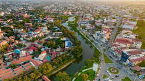
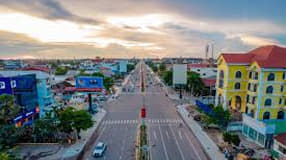
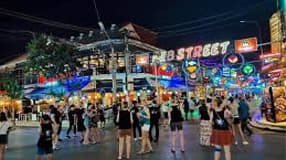
១. ឆ្អឹងខ្នងសេដ្ឋកិច្ច៖ វិស័យទេសចរណ៍
វិស័យទេសចរណ៍ គឺជាកម្លាំងចលករដ៏ធំបំផុត និងជាឆ្អឹងខ្នងនៃសេដ្ឋកិច្ចខេត្តសៀមរាប ដោយសារតែភាពល្បីល្បាញរបស់ ប្រាសាទអង្គរវត្ត និងរមណីយដ្ឋានប្រវត្តិសាស្ត្រនានា។
ការបង្កើតការងារ: វិស័យនេះបានបង្កើតការងារផ្ទាល់និងប្រយោលរាប់ម៉ឺនកន្លែង នៅក្នុងសេវាស្នាក់នៅ (សណ្ឋាគារ ផ្ទះសំណាក់) ម្ហូបអាហារ ដឹកជញ្ជូន (រ៉ឺម៉កកង់បី) និងសិប្បកម្ម។
រូបិយបណ្ណបរទេស: សៀមរាបជាប្រភពដ៏សំខាន់មួយក្នុងការនាំចូលរូបិយបណ្ណបរទេសដល់ប្រទេសកម្ពុជា។
ការប្រឈម: ការពឹងផ្អែកខ្លាំងពេកលើវិស័យទេសចរណ៍ធ្វើឱ្យខេត្តងាយរងគ្រោះ នៅពេលមានវិបត្តិសកល ឬការធ្លាក់ចុះចំនួនភ្ញៀវទេសចរ (ដូចជាក្នុងអំឡុងពេលជំងឺកូវីដ-១៩)។
២. ទិសដៅអភិវឌ្ឍន៍ថ្មី និងហេដ្ឋារចនាសម្ព័ន្ធ
រាជរដ្ឋាភិបាលបានដាក់ចេញនូវ ផែនការមេអភិវឌ្ឍន៍វិស័យទេសចរណ៍ខេត្តសៀមរាប ២០២០-២០៣៥ ដោយមានគោលបំណងពង្រឹងសេដ្ឋកិច្ច និងធ្វើឱ្យការអភិវឌ្ឍន៍កាន់តែមាន ចីរភាព។
ក. ការអភិវឌ្ឍន៍ទេសចរណ៍ប្រកបដោយគុណភាព
គោលដៅ: ផ្លាស់ប្តូរពីការទាក់ទាញភ្ញៀវទេសចរ បរិមាណ ទៅរកការទាក់ទាញភ្ញៀវទេសចរ គុណភាព (High-end Tourists) ដើម្បីបង្កើនរយៈពេលស្នាក់នៅ និងការចំណាយរបស់ពួកគេ។
ការធ្វើពិពិធកម្ម: ពង្រីកភាពទាក់ទាញឱ្យ "លើសពីការទស្សនាប្រាសាទ" ដោយបញ្ចូលទេសចរណ៍ធម្មជាតិ (ឧទ្យានជាតិភ្នំគូលែន តំបន់បឹងទន្លេសាប) ទេសចរណ៍វប្បធម៌ និងទេសចរណ៍ជនបទ។
ខ. គម្រោងហេដ្ឋារចនាសម្ព័ន្ធសំខាន់ៗ
អាកាសយានដ្ឋានអន្តរជាតិសៀមរាប-អង្គរ (SAI): ការសាងសង់និងដាក់ឱ្យដំណើរការអាកាសយានដ្ឋានអន្តរជាតិថ្មីនេះ គឺជាគម្រោងយុទ្ធសាស្ត្រដ៏ធំមួយ ដើម្បីបង្កើនលទ្ធភាពទទួលភ្ញៀវទេសចរអន្តរជាតិ។
ការកែលម្អទីក្រុង: ការស្ថាបនា និងកែលម្អផ្លូវ ៣៨ ខ្សែក្នុងទីក្រុងសៀមរាប និងការអនុវត្តគម្រោង ទីក្រុងឆ្លាតវៃ (Smart City) ក្នុងគោលបំណងលើកកម្ពស់សោភ័ណភាព និងគុណភាពជីវិតក្នុងទីក្រុងបេតិកភណ្ឌ។
ក្រុងថ្មី: ផែនការបង្កើត តំបន់ក្រុងសៀមរាបថ្មី ដើម្បីកាត់បន្ថយសម្ពាធអភិវឌ្ឍន៍នៅតំបន់ជុំវិញតំបន់អង្គរ និងជាតំបន់ទាក់ទាញថ្មី។
៣. វិស័យសេដ្ឋកិច្ចមូលដ្ឋាន
ក្រៅពីទេសចរណ៍ ខេត្តសៀមរាបក៏មានវិស័យមូលដ្ឋានដែលគាំទ្រសេដ្ឋកិច្ច៖
កសិកម្ម: ការដាំដុះដំណាំ និងការចិញ្ចឹមសត្វនៅតែមានសារៈសំខាន់សម្រាប់ជីវភាពរស់នៅរបស់ប្រជាជនភាគច្រើននៅតាមជនបទ។
សិប្បកម្ម និងឧស្សាហកម្មខ្នាតតូច: ការផលិតសូត្រ គ្រឿងប្រាក់ ការឆ្លាក់ និងផលិតផលអនុស្សាវរីយ៍ផ្សេងៗ គឺជាឧស្សាហកម្មគាំទ្រដែលទាក់ទងនឹងទេសចរណ៍។